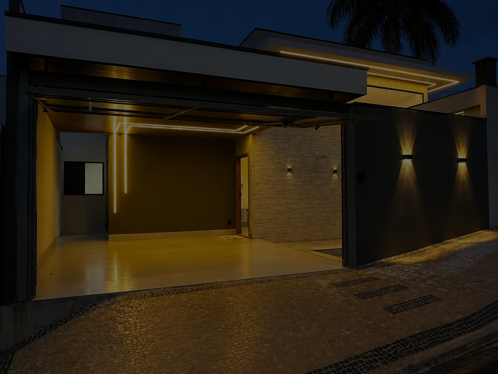
Arquitetura residencial
Casas pensadas
de dentro para fora.
Arquitetura, execução e detalhes formam uma só linguagem para criar casas bonitas, funcionais e bem resolvidas.
Construir é desenhar a rotina em escala real.
A casa começa na luz da manhã, no caminho entre cozinha e área externa, na privacidade dos dormitórios e na forma como os materiais se encontram. O projeto organiza tudo isso antes da obra começar.
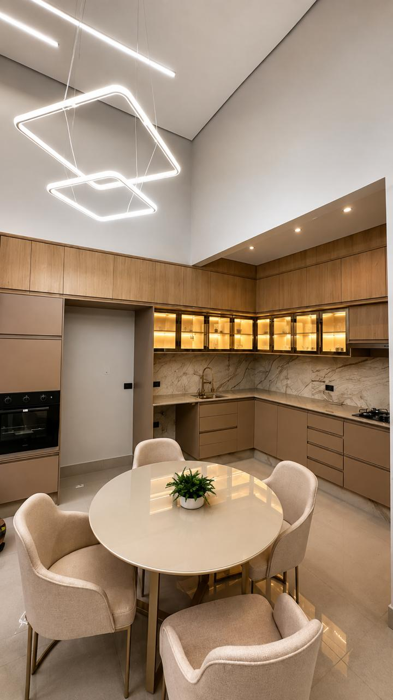
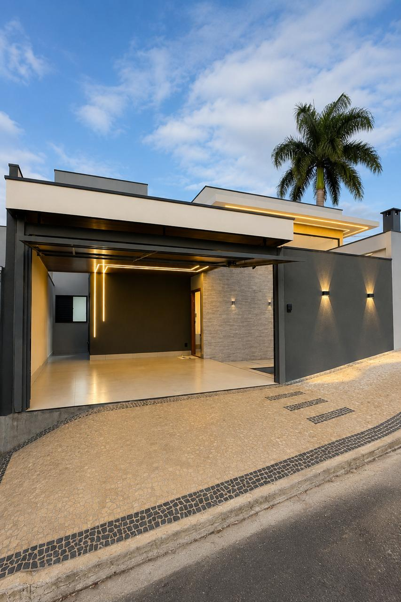
Riviera
140
Uma residência térrea onde o pé-direito duplo amplia o ambiente social e a área gourmet prolonga a casa até a piscina. A composição mistura linhas retas, tons minerais, madeira e luz integrada.
A arquitetura aparece
na sequência dos ambientes.
Em vez de reduzir a casa a uma ficha técnica, mostramos como os espaços se conectam: convivência, cozinha, descanso e área externa.
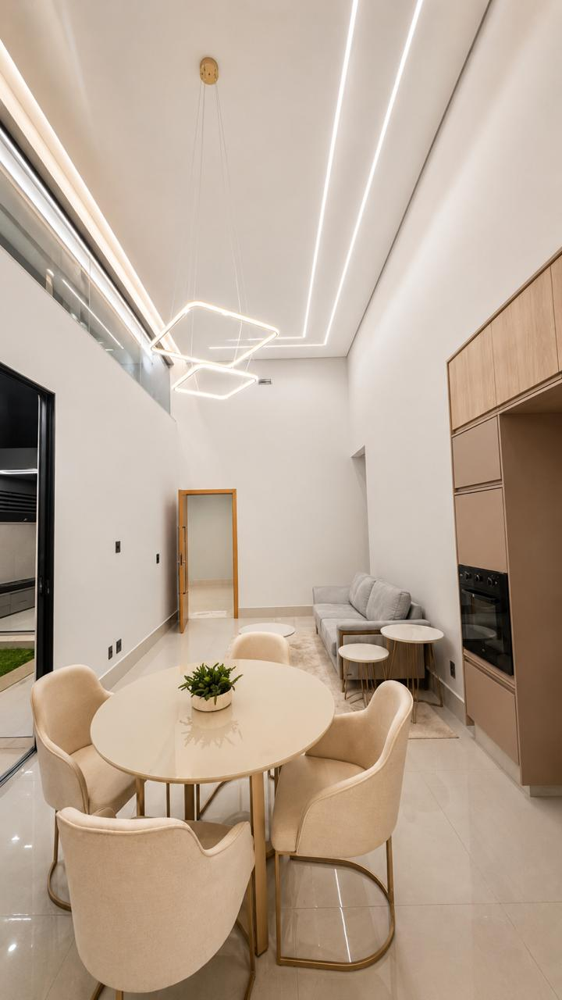
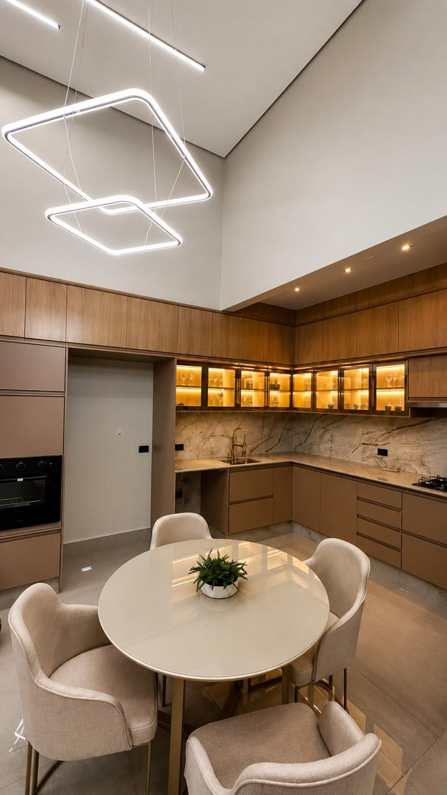
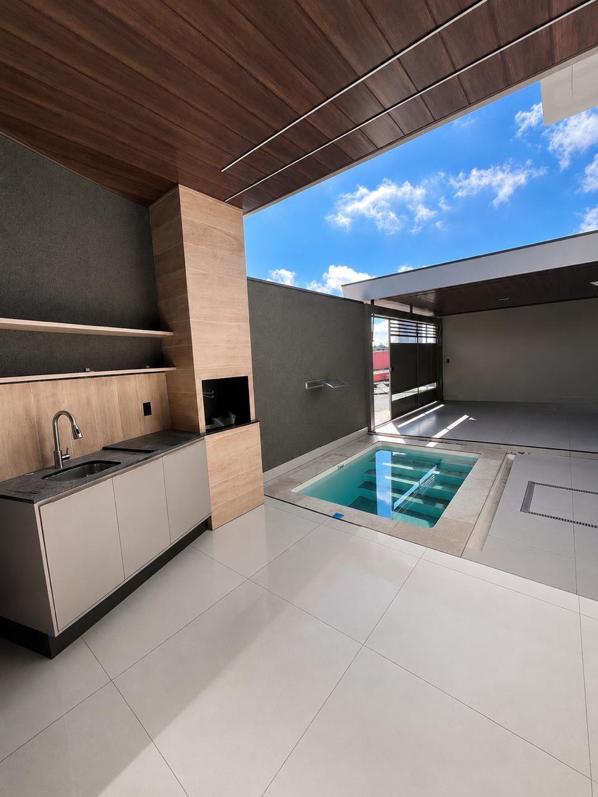
Dourado na identidade.
Precisão nos detalhes.
O dourado aparece como assinatura, não como excesso. Na arquitetura, o protagonismo permanece com luz, madeira, pedra, marcenaria e proporção.
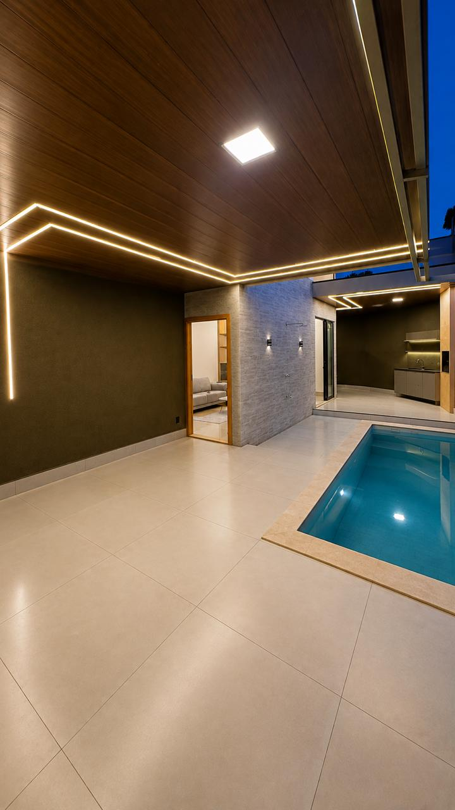
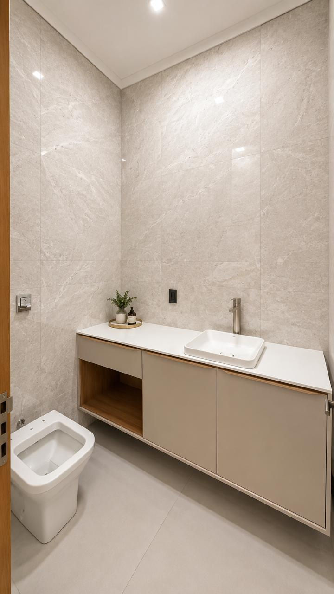
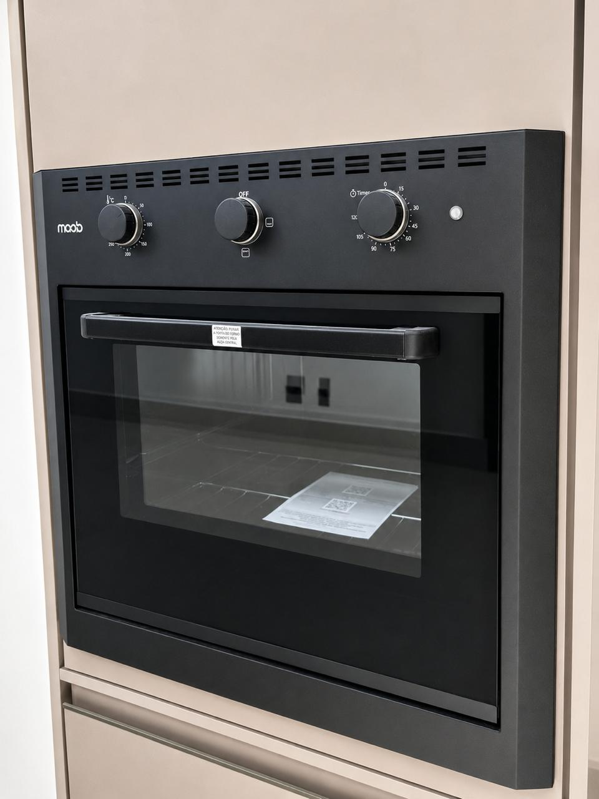
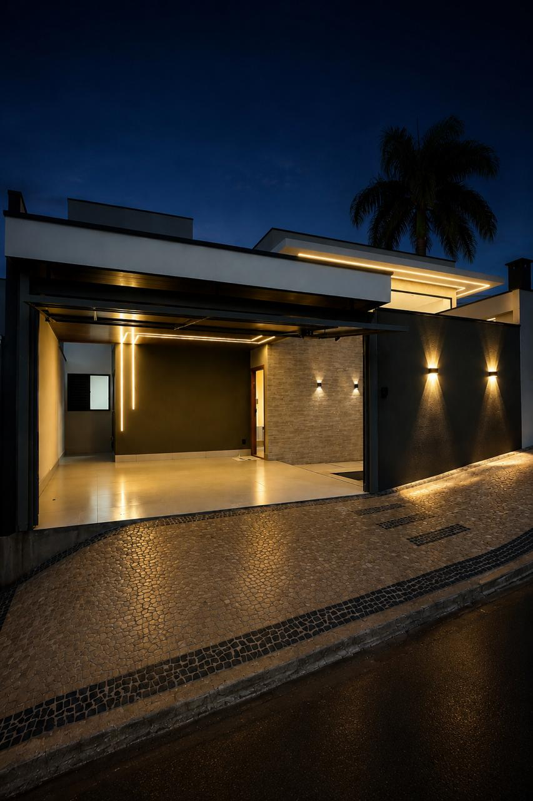
Da intenção
à entrega.
O processo ganha clareza quando cada decisão entra no momento certo. Projeto, planejamento, obra e acabamento formam uma sequência única.
Ver o processo completoConversa
Terreno, rotina, prioridades e investimento entram na mesma leitura inicial.
Projeto
Circulação, luz, privacidade, materialidade e relação interior/exterior ganham forma.
Planejamento
Compatibilização e sequência executiva reduzem improviso e tornam as escolhas mais previsíveis.
Construção
Acompanhamento atento aos encontros, alinhamentos, instalações e acabamentos.
Entrega
A casa é apresentada como espaço pronto para uso, com atenção ao conjunto e aos detalhes.
Uma casa que já
ganhou endereço.
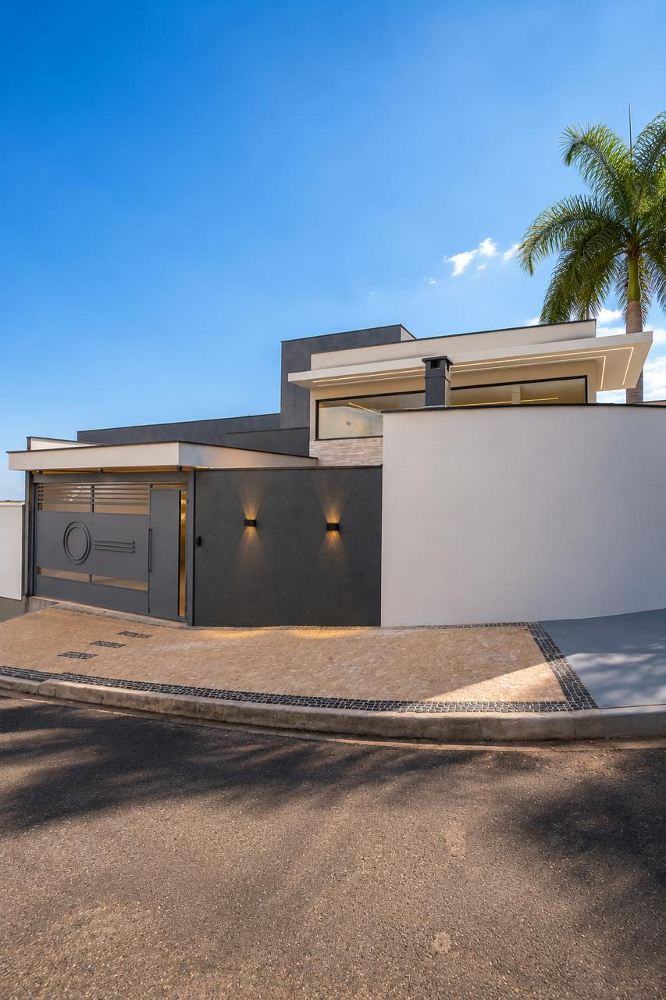
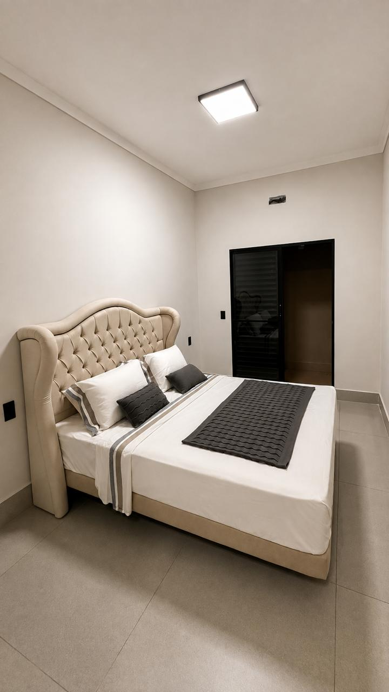
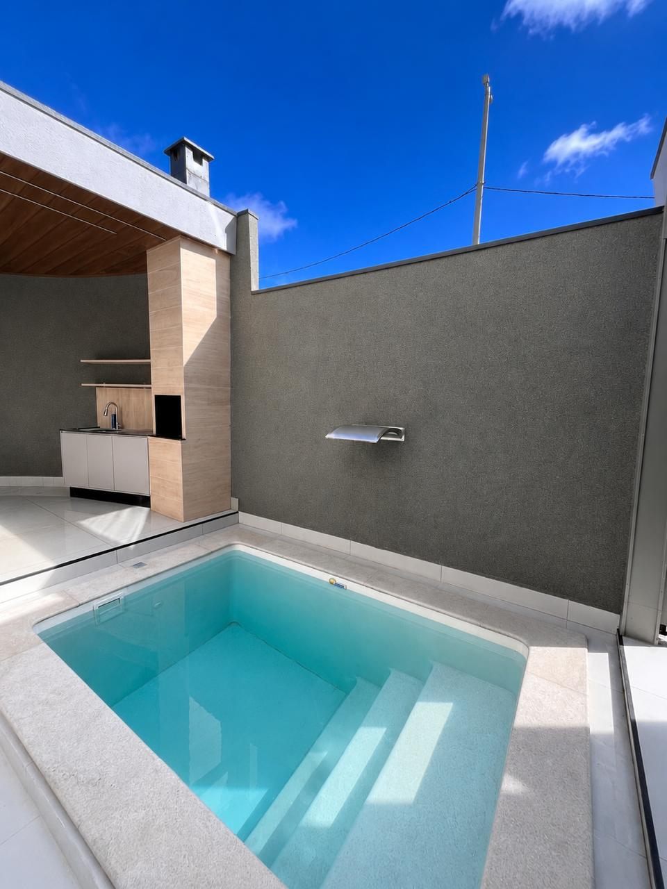
Linhas contemporâneas na fachada, ambiente social integrado, cozinha planejada, casa inteligente e piscina aquecida formam uma residência compacta, mas construída para ampliar a experiência de uso.
Tem um terreno
ou uma ideia?
Converse sobre o próximo projeto ou agende uma visita à residência Riviera.
Conversar com Guilherme →Abrir apresentação do imóvel